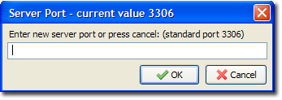
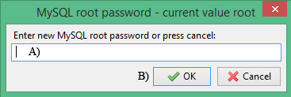

|
|
MySQL |
MySQL is an open source database server. When used in conjunction with PHP scripts, powerful and dynamic server-side applications can be created. MySQL server administration is performed using phpMyAdmin and The Uniform Server’s integrated utilities. This page covers the MySQL UniController menu.
Note: With the appropriate module (plugin) you can run either MySQL or MariaDB server. These are equivalent, UniController text matches that plugin installed. This documentation makes no distinction and refers to MySQL, while reading this documentation interchange MySQL and MariaDB as appropriate.
Change MySQL port
The "Change MySQL port" menu allows you to specify the MySQL port (Standard port 3306).
Change MySQL port
MySQL > Change MySQL port
|
 |
Note 1: For new port to become effective you must restart the servers.
General Notes:
The Uniform Server Zero XIII sets the port environment variable MYSQL_TCP_PORT and updates the user configuration file user_configuration.bat. The environment variable MYSQL_TCP_PORT is used by MySQL standard utilities.
Change MySQL root password
Starting UniController provides the first opportunity to change the current root password, it is highly recommended that you set this password at the first opportunity.
Alternatively you can skip setting a new MySQL root password and run this menu option later using:
MySQL > Change MySQL root password
|
 |
Note 1: Clicking the cancel button no action is taken. You can set the password later.
Note 2: For detailed information, see MySQL - Change password
Restore default password (root)
Restoring the MySQL root password is fully automated just click the following sub-menu:
MySQL > Restore default password (root)
You can run restore password with or without the MySQL server running. In either situation the MySQL server is started or re-started with no grant tables and the password restored, after restoration the MySQL server is stopped.
Note: For detailed information, see MySQL - Restore password
Create Delete Database
There are three methods for creating or deleting a database: via command prompt, phpMyAdmin or UniController.
For detailed information, see MySQL Create Delete Database
Create Restricted MySQL User
A restricted user has no root privileges and is constrained to a single database.
There are three methods for creating a restricted user: at a command prompt, with phpMyAdmin or through UniController.
For detailed information, see MySQL Create Restricted User
Edit Restricted MySQL User
The same aspects for creating a restricted user (above) apply to editing restricted users.
For detailed information, see MySQL Edit Restricted User
Database backup
The Uniform Server's database backup allows for manual backup of a selected database.
For detailed information, see MySQL Database backup restore
Database restore
The Uniform Server's database restore allows for manual restore of a selected database.
For detailed information, see MySQL Database backup restore
Edit Config file my.ini
The following sub-menu opens the MySQL configuration file in notepad, allowing you to directly edit the file:
MySQL > Edit Config file my.ini
Location of the configuration file: UniServerZ\core\mysql\my.ini
MySQL error log
This menu option provides a convenient short cut, allowing you to view the MySQL server log file. If you are experiencing problems with the server, this should be your first port of call; its content may shed light on a particular issue.
MySQL > MySQL error log
The path to the log file is: UniServerZ\core\mysql\data\mysql.err
Note: Depending on where you extracted UniServer, the path may differ.
A short extract from the file:
2016-07-30 11:14:34 6156 [Note] Plugin 'FEDERATED' is disabled. 2016-07-30 11:14:34 6156 [Note] InnoDB: Using atomics to ref count buffer pool pages 2016-07-30 11:14:34 6156 [Note] InnoDB: The InnoDB memory heap is disabled 2016-07-30 11:14:34 6156 [Note] InnoDB: Mutexes and rw_locks use Windows interlocked functions 2016-07-30 11:14:34 6156 [Note] InnoDB: Memory barrier is not used 2016-07-30 11:14:34 6156 [Note] InnoDB: Compressed tables use zlib 1.2.3 2016-07-30 11:14:34 6156 [Note] InnoDB: Not using CPU crc32 instructions 2016-07-30 11:14:34 6156 [Note] InnoDB: Initializing buffer pool, size = 32.0M 2016-07-30 11:14:34 6156 [Note] InnoDB: Completed initialization of buffer pool 2016-07-30 11:14:34 6156 [Note] InnoDB: Highest supported file format is Barracuda. 2016-07-30 11:14:34 6156 [Note] InnoDB: 128 rollback segment(s) are active. 2016-07-30 11:14:34 6156 [Note] InnoDB: Waiting for purge to start 2016-07-30 11:14:34 6156 [Note] InnoDB: 5.6.31 started; log sequence number 1771192 2016-07-30 11:14:34 6156 [Note] Server hostname (bind-address): '127.0.0.1'; port: 3306 |
MySQL configuration notes
UniController MySQL command-line parameter override.
Internally UniController uses a command-line to start the MySQL server with the following format:
..\UniServerZ\core\mysql\bin\mysqld_z.exe --defaults-file=" " --tmpdir=" " --datadir=" " --innodb_data_home_dir=" " --innodb_log_group_home_dir=" "
|
Parameters with example values --defaults-file="..\UniServerZ\core\mysql\new_my.ini " Full path to MySQL configuration file --tmpdir="..\UniServerZ\tmp " Full path to temp folder --datadir="..\UniServerZ\core\mysql\data " Full path to data folder --innodb_data_home_dir="..\UniServerZ\core\mysql\data " Full path to innodb data home folder --innodb_log_group_home_dir="..\UniServerZ\core\mysql\data " Full path to innodb log group folder |
|
The above paths are dynamic, for portability these paths are automatically adjusted relative to folder UniServerZ. Generally users do not need to change the above parameters hence to prevent inadvertent changes and to make portability transparent the last four parameters were moved from the configuration file (my.ini) to the command-line.
Command-line parameters take priority over those in the configuration file. If you are using a fixed installation and need to change any of the above parameter paths, Uniform ZeroXL provides a mechanism through the server configuration file \UniServerZ\home\us_config\us_config.ini explained below.
Configuration section [MYSQL]
The configuration file \UniServerZ\home\us_config\us_config.ini contains commonly changed parameters.
|
Override:
Parameters are listed on the right. |
Parameters:
|
Parameter values:
Option 1:
All parameter paths are specified in Windows format for example defaults-file=C:\my.ini will force the use of my.ini on the C: drive and datadir=D:\xxx will force the use of folder xxx on D: drive for MySQL data folder.
Option 2:
With the exception of the defaults-file parameter (which must have a value - full path to file) all parameters can be specified with no value, this disables that command-line parameter allowing you to set that parameter in the configuration file (my.ini).